how2heap 中有许多heap攻击的样例，亲自对他调试可以增加我对堆攻击的理解。并且最近刚好完成 glibc 中 malloc.c 的源码的学习，利用 how2heap 来检验一下 自己的学习成果感觉也不错。
first_fit
1 |
|
为了说明 glibc 中的堆块分配是按照 最近和大小合适原则分配，也即 first-fit 原则。
fastbin_dup
1 |
|
展示double free 结果，申请 chunk1 chunk2 chunk3 属于 fastbin内，释放 chunk1 chunk2 ，再释放 chunk1， 即可形成 chunk1->chunk2->chunk1 的释放链。
fastbin_dup_into_stack
1 |
|
展示了 使用 double free 漏洞将 fastbin 将 stack 上伪造的 size 堆块加入到 fastbin 链表中 并分配出来。
先通过double free 释放两个堆块，构造释放链 chunk1 -> chunk2 -> chunk1，然后再申请一个 chunk3 修改其 fd 指针为 fake chunk，在申请 两个chunk，就能把伪造的 栈上的 地址分配出来。
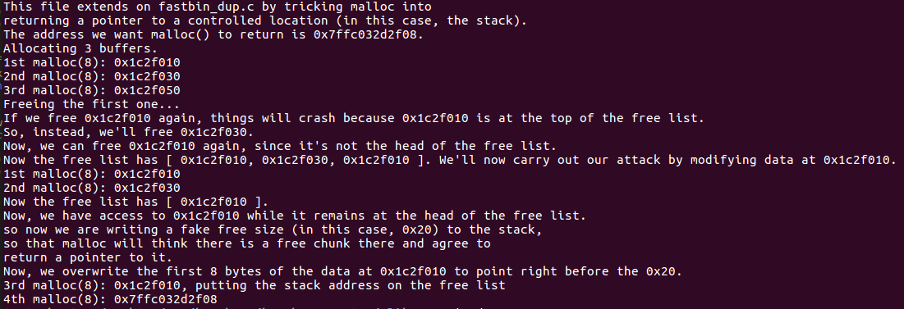
fastbin_dup_consolidate
1 |
|
首先申请两个 fastbin大小的 chunk，随后释放 chunk1，chunk1 将会被放入 fastbin 中。再申请一个 大于 smallbin 的 large chunk，会触发 堆合并，将 fastbin 的chunk 进行合并后放入 unsortedbin 中。此时 fastbin 中已经没有 chunk1，但是 unsortedbin 中有 chunk1，而且 chunk1 的prev_inuse 位没有被置为 0。所以我们可以继续 释放 chunk1，此时 chunk1 仍然会被放入 fastbin 中，而且由于 fastbin中此时为空，能够绕过 double free 的检测。那么 我们再 连续申请 两次 chunk1 大小的 chunk，将会得到两个 chunk1 指针。
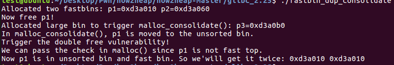
unsafe_unlink
1 |
|
unlink 攻击的样例，先申请了两个大于 fastbin 的chunk，然后 修改 chunk 1 的 fd 指针为 chunk0_ptr -0x18，bk 指针为 chunk0_ptr - 0x10。随后 修改 chunk2 的 prev_inuse 为 0，然后释放 chunk2。最终 chunk 1 发生了 unlink 操作。 chunk0_ptr 的值为 chunk0_ptr-0x10。
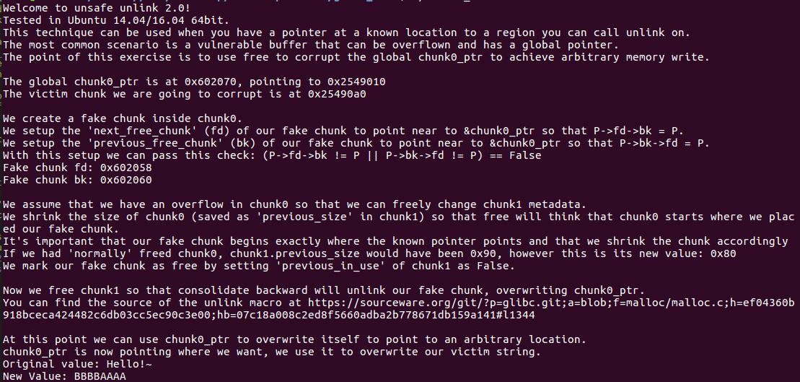
house_of_spirit
1 |
|
在栈上伪造了两个chunk size，大小分别是 0x40 和 0x1234。随后申请一个 chunk 初始化堆块。然后 释放 fake chunk1 的地址，将其放入fastbin 中，随后再申请一个 0x40 的chunk，就能够申请到一个 栈上堆块。
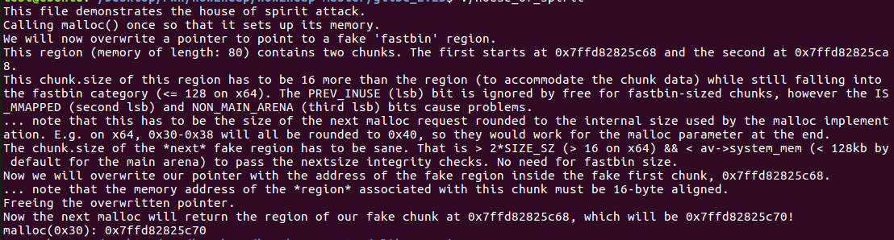
poison_null_byte
1 |
|
首先申请了4 个chunk，其中 chunk4 是用来与 top chunk 间隔的。修改 chunk2_mem(表示系统返回用户的指针，不包含堆块头)+0x1f0 的值为 fake prev_size，然后通过 off-by-null 漏洞修改 chunk2 的size 由 0x211 变为了 0x200，然后释放 chunk2。此时可以发现 仅仅释放 了 0x200 的 大小，也就是刚好到 chunk2_mem+0x1f0 的位置。而 chunk3 堆头所在的 chunk2 真正的 prev_size 0x210 并没有被修改。然后我们再 分配 0x100 的 chunk 5 和 0x80 的 chunk6，可以发现这两个chunk 其实 都在 chunk2 的内部。最后释放 chunk5, 再释放 chunk3，会发生堆合并 即 原有的 chunk2 和 chunk3 合并成了一个 释放块，其中也包含了 我们没有释放的 chunk6，那么就可以造成 chunk overlapping。
示意图：
1 | 初始时： |
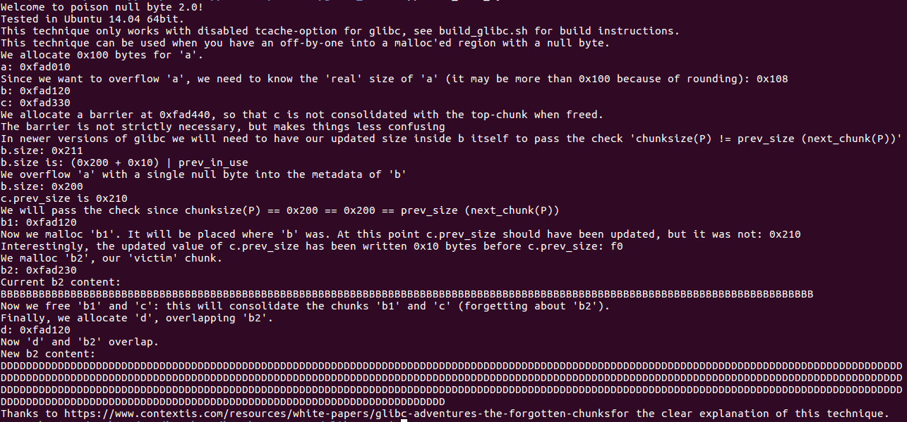
house_of_lore
1 | /* |
这个是通过small bin的攻击来实现的。
- 分配一个 small bin大小的chunk_ptr，和另一个chunk 用来间隔 top chunk。
- 在栈上伪造两个 地址fake chunk1和fake chunk2，需要满足：
1 | fake chunk1: |
- 然后释放chunk_ptr，其会放入 unsortedbin 中
- 申请一个大于 small bin 大小的 chunk，系统会将 chunk_ptr 放入 small bin链表中；
- 修改chunk_ptr 的 bk 指针为 fake chunk1，此时 small bin为：
1 | chunk_ptr->bk = fake chunk1 |
- 申请 chunk_ptr出来，此时 small bin中就只剩下 fake chunk1 和 fake chunk2，可以申请任意地址的堆块
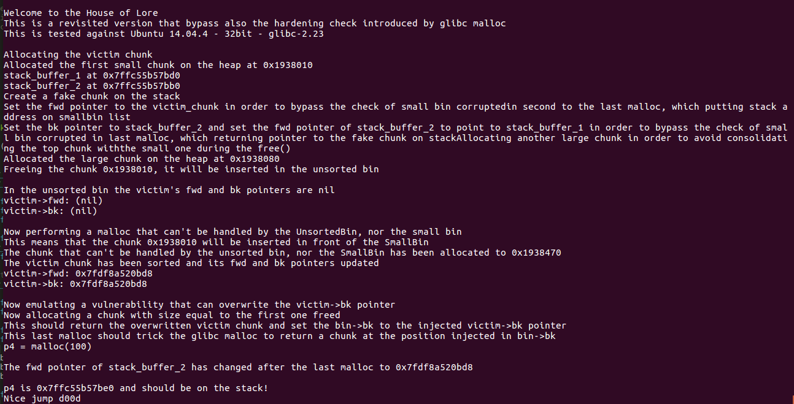
overlapping_chunks
1 | /* |
首先申请四个 chunk，每个 chunk都大于fastbin 的size。然后释放 chunk2，在修改chunk2 的 size 为 chunk2_size + chunk3_size，然后再申请 chunk2_size+chunk3_size 的大小的chunk，就能够成功申请从 chunk2堆头开始 大小为 chunk2+chunk3 的 fake_chunk，实现对 chunk3 的覆盖。
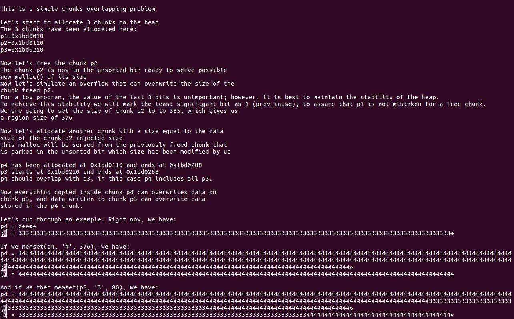
overlapping_chunks_2
1 | /* |
申请5个大于 fastbin 的chunk，释放 chunk4。修改 chunk2 的大小为 chunk2_size + chunk3，然后释放chunk2，会发现 chun2、chunk3和 chunk4 直接合并在一起了，然后再 申请 chunk2 +chunk3 的大小的 chunk 会覆盖 没被释放的 chunk3。
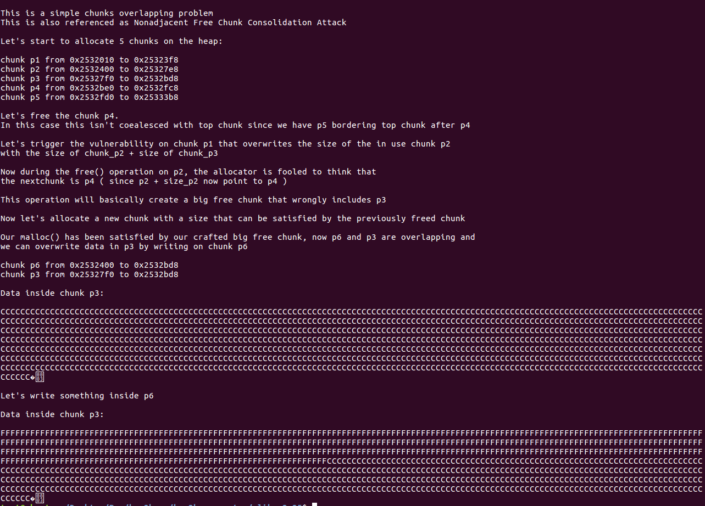
house_of_force
1 | /* |
主题思想就是通过溢出修改 top chunk 的 size 为 -1，即增大 top chunk的size 大小，然后分配 从 bss_var 到 top chunksize 的chunk，然后通过修改 该 chunk 覆盖 bss 中的数据。然后截止分配数据都是 从 bss 段开始。
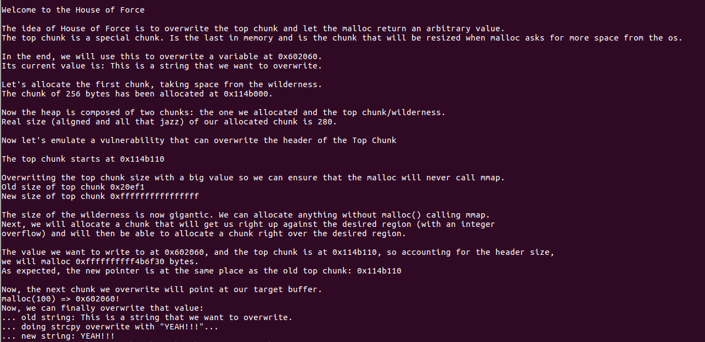
unsorted_bin_attack
1 |
|
申请一个大于 fastbin 的chunk，然后释放它 进入 unsorted bin，修改其 bk 指针为一个内存地址fake_ptr - 0x10，然后再分配 同样大小的 chunk，将该chunk 申请出来。此时 内存地址处 fake_ptr 的值已经被更改为 unsorted bin 链表的值。
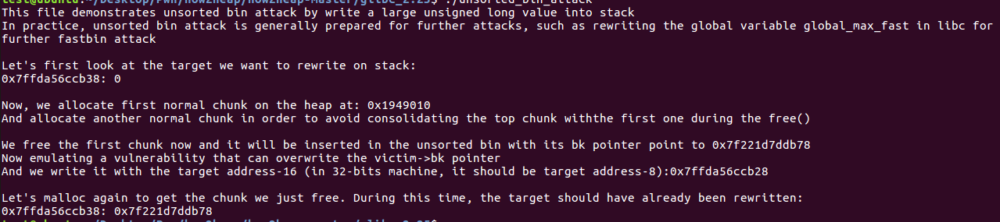
unsorted_bin_into_stack
1 |
|
在需要申请的 stack_buffer 伪造 fake_size1 和 bk指针指向任何可写的地址。申请两个大于 fastbin 的 chunk ，将 chunk1 释放到 unsortedbin 中。随后修改 chunk1 的size 大小为 fake_size2(fake_size2 < fake_size1)，再修改 其 bk 指针为 stack_buffer 的地址。
随后申请一个 大于 fake_size1 的 chunk，由于 unsortedbin 中的 第一个 chunk1 其大小为 fake_size2 ,小于 fake_size1，所以其不能够分配。unsortedbin 会继续遍历下一个 unsorted bin chunk 即 stack_buffer 的chunk，其大小 fake_size1 满足，所以其能够被分配。
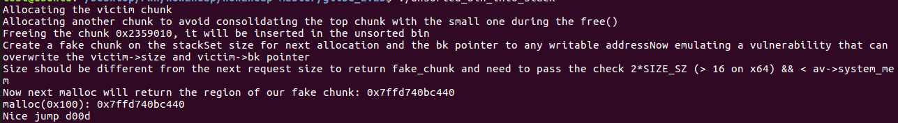
house_of_einherjar
1 |
|
通过先伪造 fake chunk 的 size 和 fd 、bk 指针和 fd_nextsize 和 bk_nextsize 。然后申请 3 个大于fastbin 的chunk。修改chunk2 的 perv_size为 chunk2 到 fake_chunk的地址差值， 修改chunk2 的prev_inuse 为 0，然后释放 chunk2，就会导致 chunk2 和 fake chunk2 合并。最后申请堆块就能够从 fake chunk处开始分配。
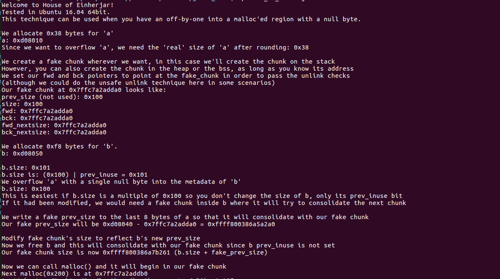
house_of_orange
1 |
|
House of orange 攻击原理，最终能够通过 FSOP getshell，非常完美的利用流程。
首先申请一个 chunk，该 chunk 与 top chunk相邻，通过该 chunk溢出修改 top chunk 的size为 fake_size，将其改小，但要满足地址对齐到 0x1000。
随后申请一个 比 top chunk的 fake_size 大的chunk，此时系统会将现有 top chunk放入 unsortedbin 内，然后执行 sbrk 重新分配一个大的 分配区。
此时 原有的 top chunk的 fd 和 bk 指针都为 main_arena+88 的地址。
修改 top chunk 的fd 和 bk指针 的后两位，将其 指向 IO_list_all-0x10 结构体。
这里还修改了 top chunk的 size ，是为了当在unsortedbin chunk不符合我们申请的chunk时 会把chunk放到对应大小的small bin 或者 large bin中，此处修改为 0x61，是将其放入 smallbin[0x61] ，而该地址刚好是将 main_arena+88 的地址作为 fake _IO_FILE 时中 chains 的地址，所以系统会根据该值 去寻找我们在 unsortedbin 中伪造的 fake _IO_FILE 结构。
然后在 unsotredbin chunk中 去伪造 fake IO_FILE_struct，和 IO_jumps_table 。并且保证 fake _IO_FILE 结构能够满足执行 _IO_OVERFLOW 的要求。
执行 malloc 时，由于 将 unsortedbin 放入 small bin 会发生错误，系统会调用 _IO_fflush 去遍历 _IO_FILE 结构执行 _IO_OVERFLOW，最终被我们 getshell。
详细分析，可参考我以前的 IO_FILE_Related 这篇博文。
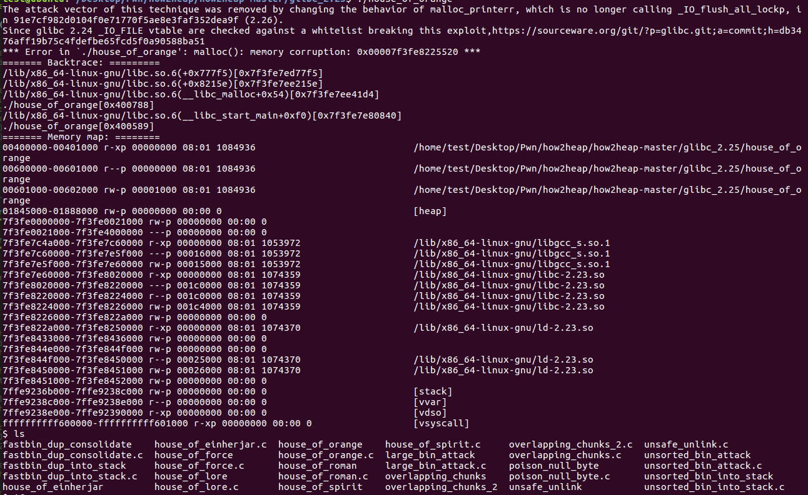
house_of_roman
1 |
|
house of roman 适用于 程序没有输出函数可以泄露libc 地址的做法。首先构造4 个 fastbin chunk，然后释放 chunk2将其 放入fastbin中。通过堆溢出漏洞，修改 chunk2 的 size 大于 fastbin的地址 为 chunk2+chunk3 的size之和，再释放 chunk2 将其 释放到 unsortedbin 中。此时 chunk2 的 fd 和 bk 指针都为 main_arena+88 的地址。再申请 一个 大于 fastbin的 的 chunk5，程序就会直接从 unsortedbin 中的 chunk2 开始去划分，然后再修改 chunk5 的 fd 和 bk 指针的 后两位为 malloc_hook - 0x23 的地址。然后再修改 chunk2 的 size 为原来的 fastbin size。那么再分配 两个 fastbin chunk，即可成功分配出 指向 malloc_hook - 0x23 地址的 chunk。
由于不知道 Libc 地址，所以需要使用 unsortedbin attack 将 main_arena+88 的 地址写进 malloc_hook，然后再去修改 malloc_hook的 后两位为 gadget 地址 去 getshell。
由于经过上面的 fastbin attack 攻击，此时 fastbin 是混乱的，我们需要进行修复。可以再申请一个 fastbin 释放后，修改其 fd 指针为0。
由于经过第一步的操作，此时 unsortedbin 中仍然还有剩下的 堆块。可以再申请一个堆块，将 unsortedbin 中剩下的堆块 伪造到 与 chunk3 地址对齐，此时 chunk3 是 分配的，但是在 unsortedbin 中 也有其地址。通过修改 chunk3的 bk 指针的后两位将其指向 malloc_hook，再去分配该 unsortedbin，即可造成 unsortedbin attack，将 malloc_hook 的值修改为 main_arena+88 的地址。
最后就是 通过修改第一步 分配出的 在 malloc_hook的伪造快 去 修改 malloc_hook 的值为 gadget 来 getshell。
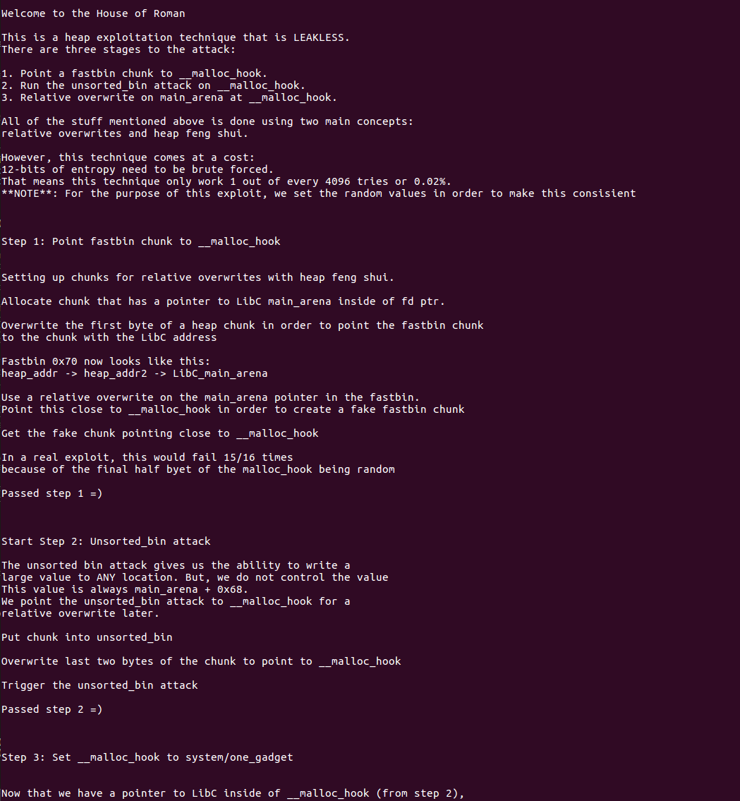
large_bin_attack
1 | /* |
申请 3 个 large chunk，chunk2 和 chunk3 的size 相同，chunk1 的 size 小于 chunk2和chunk3，每个 large chunk 之间都使用一个 fastbin 作为间隔，防止合并；
释放 chunk1 和 chunk2 两个 large chunk，此时两个 chunk 都会先进入 unsotredbin 中；
再申请一个小的 size chunk，此时会先把 chunk1 和 chunk2 放入large bins 中，然后取出 chunk1 划分，将剩下的 放入 unsortedbin中；
释放 chunk3，此时chunk3 也会进入 unsortedbin中；
修改chunk2 的 size和 bk指针，bk_nextsize 指针 为 stack_addr
随后，再申请一个小的 chunk，此时位于 unsortedbin中的chunk 会被放入largebin中，在放入 时会执行：
1 | victim->bk_nextsize = fwd->bk_nextsize |
产生的结果是：chunk2 的 bk 指针 被修改。
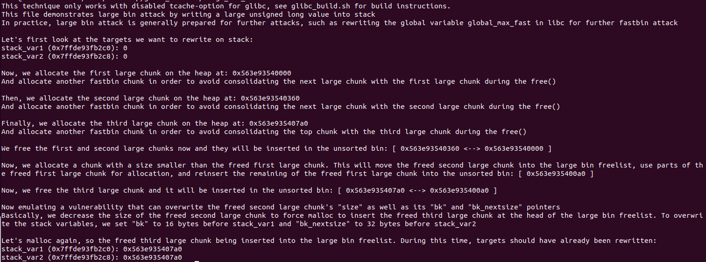
glibc 2.26
fastbin_reverse_into_tcache
1 |
|
首先在 Fill tcache，然后再 填充 7 个和tcache 相同大小得 fastbin，随后修改 fastbin 的最后一个 chunk 的 fd 指针使得其指向 我们想要得内存值，此时就相当于有 8 个fastbin。随后empty tcache，再申请一个 fastbin，那么系统会将剩下得 fastbin链按照反向 由后往前填充到 tcache。随即我们就能申请 我们想要的内存地址得 tcache了。
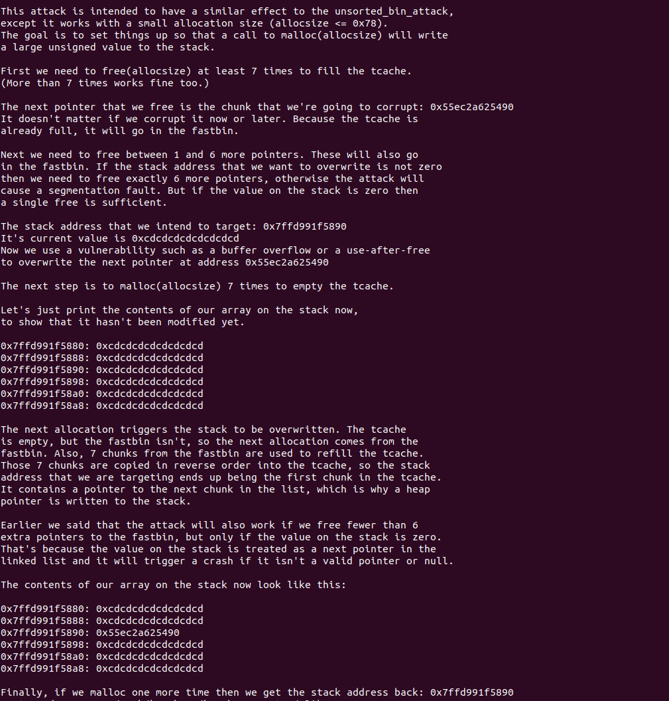
house_of_botcake
1 |
|
申请 7 块chunk，填充 tcache；
申请一个与tcache同大小的 chunk1，用于合并；
申请同大小的漏洞 chunk2，会触发 house_of_botcake 攻击；
申请 chunk3，用于与 top chunk间隔，防止合并；
释放 7 个 chunk，填充 tcache；
释放 chunk1，再释放 chunk2，此时 chunk1 和 chunk2 会发生 堆块合并，并被放入 unsortedbin中。
申请一个 chunk3, 会从 tcache中获取，此时tcache 个数为 6；
再释放 chunk2，此时 chunk2 会被放入tcache中；
由于 chunk1 和 chunk2 发生合并，被放入 unsortedbin 中，所以申请一个 大于 tcache size的chunk 4会直接从 unsortedbin 中获取，此时获取chunk 4 就能够覆盖 chunk2，我们修改 chunk2 的 next 指针，就能使得 tcache链 指向我们想要的内存；
再申请 2 个 chunk，就能将 我们想要的 内存 chunk 分配出来。
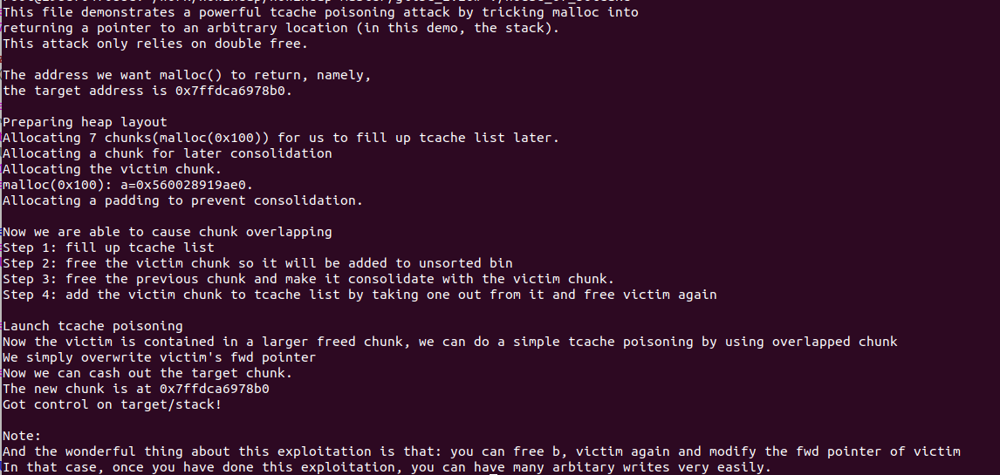
house_of_einherjar2
1 |
|
- 申请一个 chunk a，chunk b， chunk c 的 真实size 大于 0x100；
- 然后 通过 chunk b的 堆溢出，修改 chunk c 的 size 后两位为 \x00，和在 chunk c的 prev_size 处伪造 fake_prev_size = chunk b + chunk a -0x10；
- 随后在 chunk a的 数据区第一行 伪造 fake size 为 上面的 fake_prev_size；
- 随后申请 7 个与 Chunk c 同大小的 chunk，释放填充 tcache；
- 释放 chunk c，因为 chunk c 的 prev_inuse 位被置为 0，所以会前向合并，通过 fake_prev_size 找到 前一个堆块，并比较 fake_prev_size 与前一个堆块的size（即比较 chunk a 的 fake_size）是否相等，如果相等则发生 堆合并；
- 此时合并的堆块，会被放入 unsortedbin中，而此时的 chunk b 还处于使用状态，释放chunk b（因为其大小与前面 tcache大小不同，会被放入新的 tcache bin中）；
- 再申请一个 大于 chunk c 大小的 chunk，会直接从 unsortedbin 中去寻找划分，该chunk 就能够覆盖到 chunk b的数据，随后通过 改写 chunk b的 next指针，就能够实现tcache poisoning 攻击。
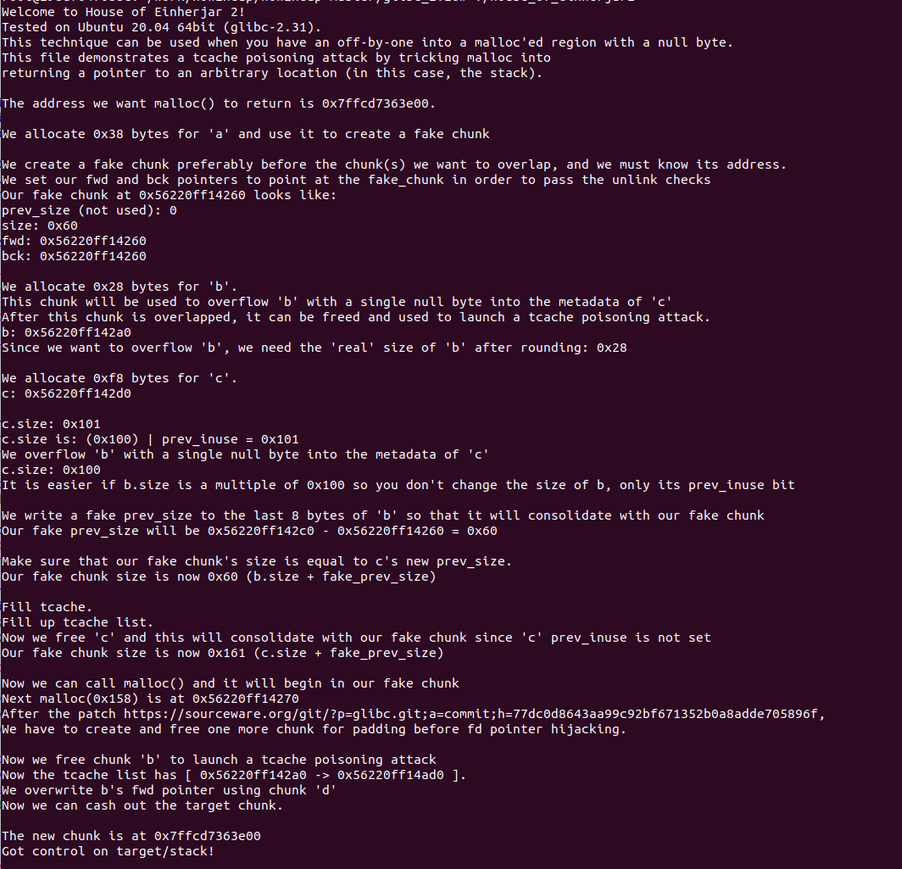
tcache_dup
1 |
|
很简单的tcache double free攻击，因为tcache 释放时的检查并不严格，所以能够直接对 同一个 tcache释放两次。
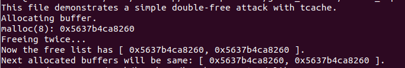
tcahe_poisoning
1 |
|
直接修改 tcache next 指针，实现攻击。
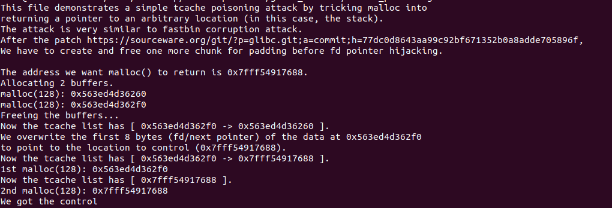
tcache_house_of_spirit
1 |
|
- 在栈上伪造一个chunk size，其数据区地址为 fake_ptr；
- 随后初始化整个分配区，即分配一个 chunk就行；
- 释放 fake_ptr，那么该伪造的chunk就会被放入 tcache中，我们再申请就能将该块申请出来。
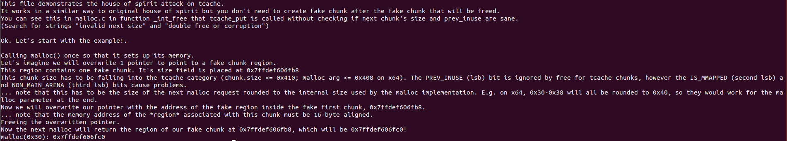
tcache_stashing_unlink_attack
1 |
|
- 申请 9 个 chunk，然后先释放chunk3 - chunk9 和chunk1，他们会被放入 tcache bin中。然后再释放 chunk0 和 chunk2，会被放入 unsortedbin中；
- 随后申请一个 大于 上述 chunk size 的chunk，那么此时所有 的 空闲chunk都不合适，并且 unsortedbin 中的chunk0 和 chunk2 会被放入 small bin中；
- 申请两个 tcache，此时 tcache 中的 剩余 chunk数量 为 5 个；
- 修改 chunk 2 的 bk指针 指向我们伪造的 内存的地址 chunk，该内存地址的chunk 的 bk 指针要为一个 可写入的地址；
- 随后调用 calloc() 申请 与tcache 同大小的 chunk，由于 calloc() 函数会跳过 tcache，所以其会直接从 small bin中 取 chunk0；
- 此时，同上述的 fastbin_reverse_into_tcache 类似的结果，small bin 中剩余的 chunk2-> fake chunk，会从后向前 加入 tcache中，而且由于 此时tcache 仅剩2 个空余，所以只会遍历到 fake chunk就会结束。
- 经过上述操作后，此时 tcache链中 第一个 chunk 是 fake chunk，我们取出即可。
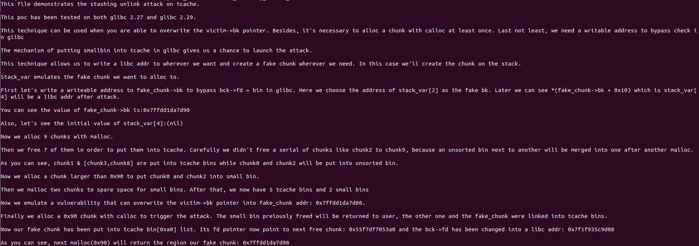
总结
突然想给这篇文章加个结尾，基本上应该是把 how2heap 的内容都看了一遍，虽然感觉很多攻击原理自己之前做题时也明白，但是还没有这样系统的学习过。而且学习了 malloc 的源码，再来看这些攻击，其实就能有更深入的了解。以后还是要多看源码，不说了先去把 IO 相关的源码看了，再来总结一下 IO 攻击。


- 本文作者： A1ex
- 本文链接： http://yoursite.com/2020/09/28/how2heap/
- 版权声明： 本博客所有文章除特别声明外，均采用 MIT 许可协议。转载请注明出处！